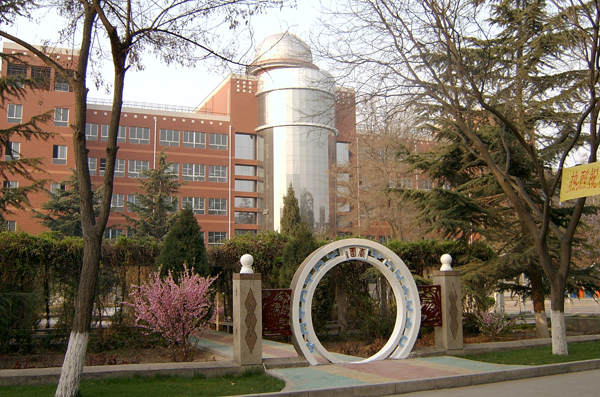

<div>
<!-- *****************************************************************************************************************
	 ABOUT ME
	 ***************************************************************************************************************** -->

	 <div class="container mtb">
	 	<div class="row">
	 		<div class="col-lg-6">
	 			
	 		</div>
	 		
	 		<div class="col-lg-6">
	 			<h4>You don't know what hardworking means.</h4>
	 			<p>I worked hard for a few months before entering this high school. How hard? like sleep for only 3 to 4 hours everyday for that few months doing all the practices. But when I went to this school, it was a joke. This is not one of the best high schools in Gansu province. This is THE best hish school in the entire province. Best students from the entire province goes to this high school. Only around 700 students among around 30,000 students could me admitted in this school each year. The goal? Score high enough to get into the best universities in China. Around 92% students here goes to top 39 universities. And you could imagin how tough it would be. As I mentioned above, I did spent a few months working hard. But here, it's different. All students work hard. I mean very hard. Every day starts at 6:30 am. Besides breakfast, lunch, and dinner breaks, it's all class time. Studying time is always in classroom, after dinner. At 10:00 pm, classroom time is over. Kids go to dorms, or say baracks, cleaning themselves, chat a bit, 11:00 pm ,lights goes off. You guess kids here are going to sleep. Wrong. They are supposed to. But they will turn on their little portable table light, or flashlight, then start doing extra practices. For how long? Three years. Yes there are winter and summer breaks. But students here take that time mostly study at home. I became one of thoses kids. Was it boring? No! I made friends there. I had good time there. There is always going to be puppy politics among teenagers. And that was the fun. Anyway, that careless simple life was long over. I don't want to live that all over again. But somehow I do miss it. I miss the days and nights. I miss the simplisity. I miss my teachers there. I miss that little 3 years of time during which I was a young and stupid kid.</p>
	 			<p>The school, Northwest Normal University High School, is one of the oldest high schools in China. It was established in 1937 in Beijing as Beijing Normal University High School. During WWII, the school was moved to Gansu province in avoiding war scenes. And thus a part of the university and high school stayed there while others return to Beijing. Thus started the Northwest Normal University and this high school. It is a glorious school. Among aluminies, there are academicians of Academy of Science of China, US and other countries. And academicians of Academy of Engineering in China. Through this school, Gansu province, a poor and underdeveloped province of China, provides this world with the best minds and creativities.
	 	</div><! --/row -->
	 </div><! --/container -->
</div>
</div>
